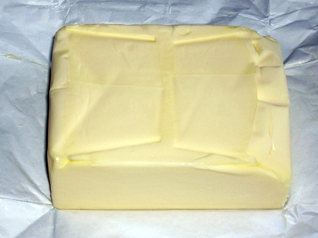

|  |
Mi is az a vaj?A vaj emlős állatok tejéből készült, emberi táplálkozásra szolgáló zsiradék. A pár órát állni hagyott tej felszínén képződő tejszínből vagy tejfölből készítik. Az aludttej készítése is ezzel a lépéssel kezdődik, azonban a vajkészítéshez szükséges zsiradék különválásához nem szükséges megvárni a tej megalvadását: a kicsapódás már hamarabb megtörténik, éppen mivel a tej és a tejföl állaga a bennük található zsír mennyisége és milyensége miatt eltérő. A vajkészítés eljárása során köpüléssel választják el a tejzsírt az úgynevezett írótól. A vaj szobahőmérsékleten szilárd, de nagyon puha, csontfehér anyag. AlapanyagaMagyarországon és Európa jelentős részén általában tehéntejből állítják elő. Ritkábban előfordul bivaly-, juh- illetve kecsketejből előállított vaj is. |